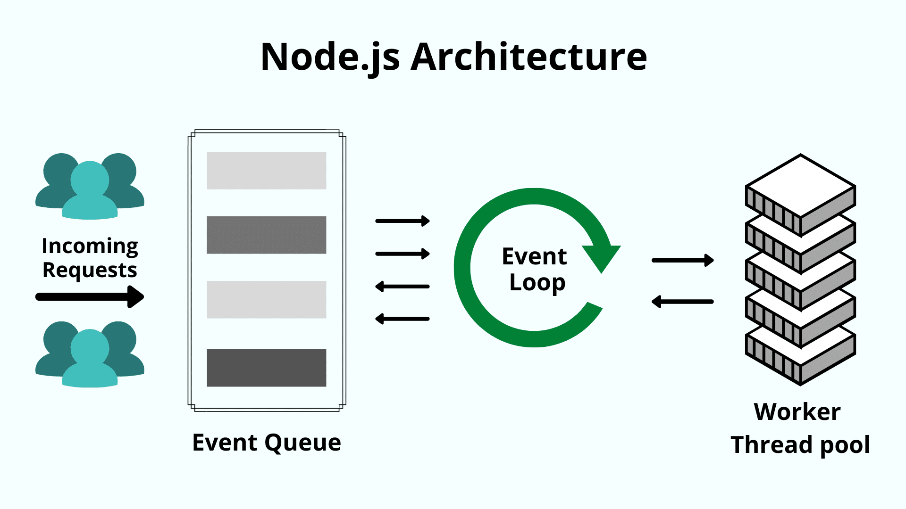
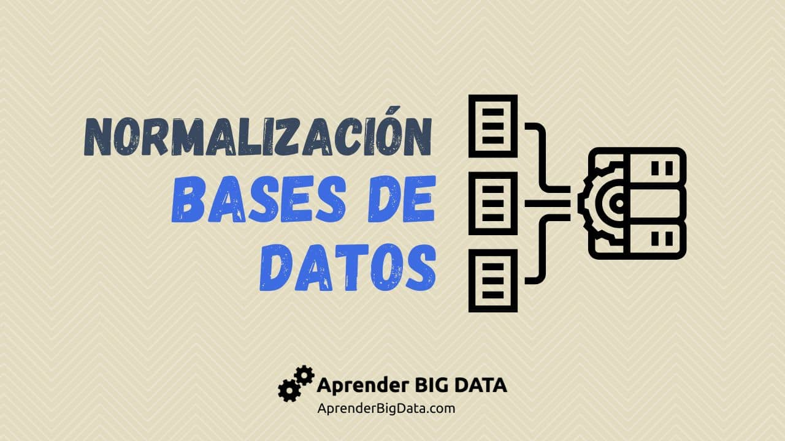
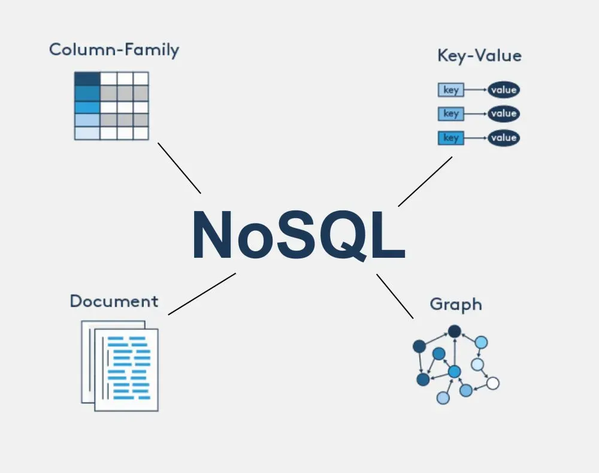

| Palabra con N | Definicion en Español | Definicion en Ingles | Eje. Imagen |
|---|---|---|---|
| 1. Nodo - Node | Cualquier dispositivo físico o virtual conectado a una red (como un servidor o base de datos) que procesa, almacena o transmite información. | Any physical or virtual device connected to a network (such as a server or database) that processes, stores, or transmits information. |  |
| 2. Normalización - Normalization | Proceso de organizar las columnas y tablas de una base de datos para reducir la redundancia de datos y mejorar la integridad. | The process of organizing the columns and tables of a database to reduce data redundancy and improve data integrity. |  |
| 3. NoSQL | Tipo de base de datos no relacional que no utiliza el esquema tradicional de tablas y filas, diseñada para almacenar datos no estructurados o de gran volumen. | : A type of non-relational database that does not use the traditional table-and-row schema, designed to store unstructured or high-volume data. |  |
| 4. No-repudio - Non-repudiation | Principio de seguridad que garantiza que una parte en una transacción o comunicación no pueda negar la autenticidad de su firma o el envío de un mensaje. | A security principle that ensures that a party in a transaction or communication cannot deny the authenticity of their signature or the transmission of a message. | |
| 5. N-capas - N-tier | : Estilo arquitectónico en el que una aplicación se divide en múltiples capas lógicas o físicas (como presentación, negocio y datos) para mejorar la escalabilidad. | An architectural style in which an application is divided into multiple logical or physical layers (such as presentation, business, and data) to improve scalability. | |